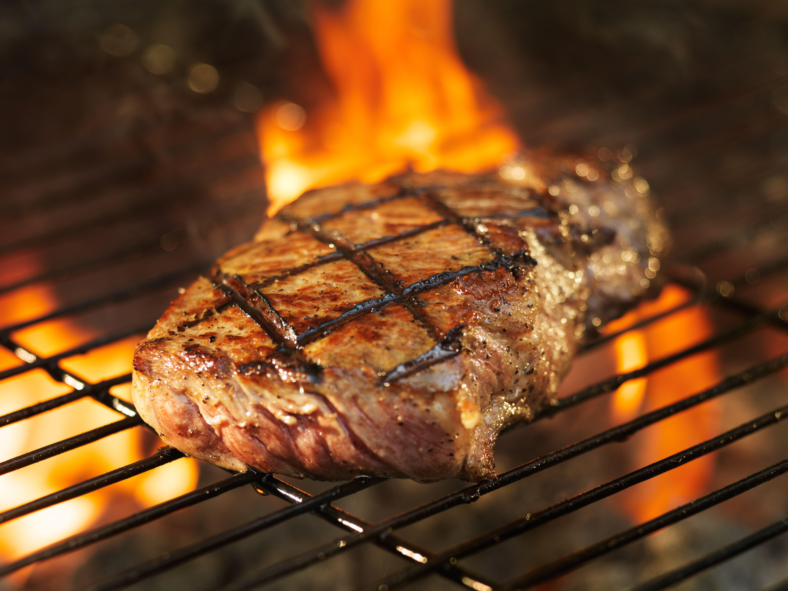

Basic Grilled Steak

An amazing and simple grilled steak recipe
Turn the steaks only once as you cook them. The more time they are in direct contact with the grill, the better. Serve with corn and Smoked Tomatoes.
Ingredients
- 4 (8-ounce) ribeye steaks, trimmed (about 3/4 inch thick)
- 1 teaspoon salt
- 3/4 teaspoon freshly ground black pepper
- Cooking spray
Directions
- Sprinkle both sides of steaks with salt and pepper. Let steaks stand at room temperature for 20 minutes.
- Prepare grill.
- Pat the steaks dry with a paper towel. Place steaks on grill rack coated with cooking spray; grill 2 minutes on each side or until desired degree of doneness. Remove from grill. Cover steaks loosely with foil; let stand 5 minutes.